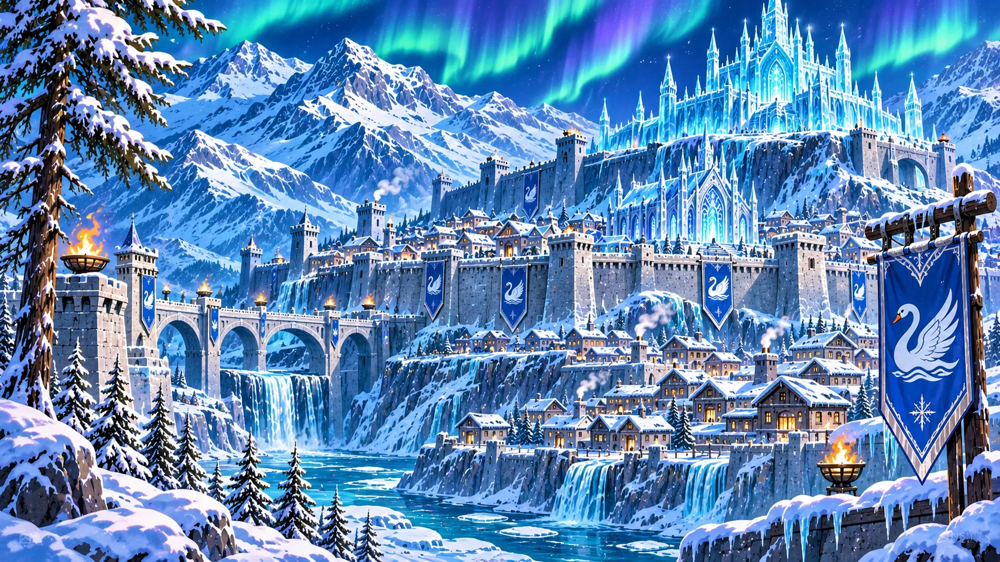
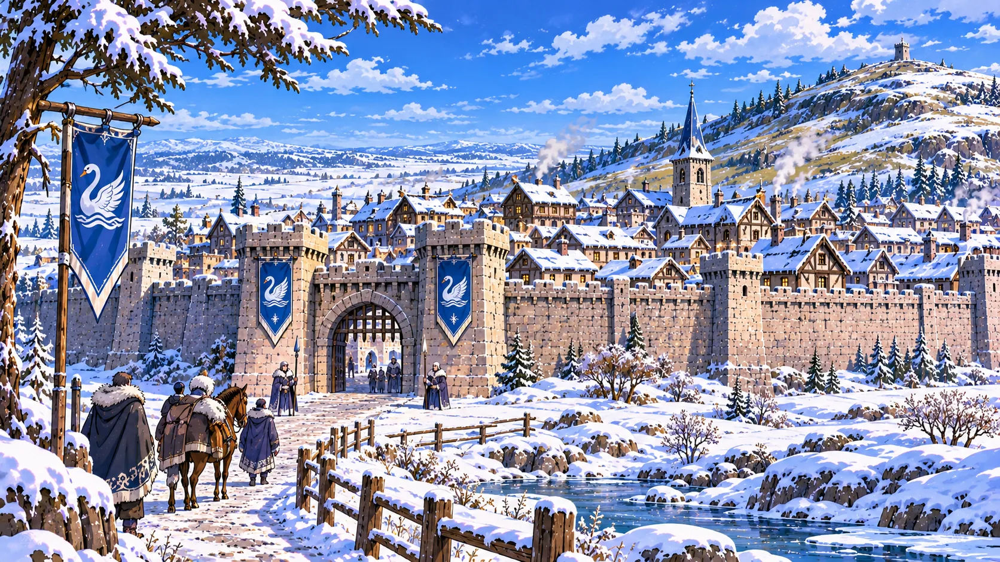

Un ritratto del regno
Nelle Icelands settentrionali sorge Iceblood, regno di ghiacci, laghi e fiordi, dove otto città immense custodiscono quasi tutta la popolazione dietro mura imponenti. Fuori dalle fortificazioni, le scorrerie dei Lupi rendono pericolosi perfino i viaggi più comuni. Gli abitanti hanno imparato a difendersi, ma anche a condividere il cibo nelle grandi sale e a conservare la memoria degli antenati. Il loro stendardo mostra un cigno bianco con le ali spiegate in campo azzurro. Sul trono siedono Cristal Swan Igor V ed Elena Rubies.
Il regno in breve
Iceblood comprende una capitale omonima e sette città baronali: Rubies, Colinor, Rupelus, Velas, Pallas, Zelena e Murian. La popolazione è prevalentemente Noren. Il potere supremo appartiene alla Corona; il Consiglio dei Ghiacci riunisce i sette baroni e offre pareri che Cristal ascolta sempre, pur non essendo vincolato a seguirli. Le città sono assai più estese di quelle dei Reami, perché racchiudono entro le mura anche molti spazi che altrove rimarrebbero all'esterno.
GEOGRAFIA E VIE DEL REGNO
Terre di ghiaccio, laghi e fiordi
Il territorio alterna montagne, pianure gelide, laghi anche salmastri e fiordi che raggiungono il Mare di Zambara. L'aurora boreale illumina spesso il cielo. Le tempeste di cristallo, legate al Mana, rappresentano un pericolo particolare. Antiche leggende circondano l'Occhio di Scintillante, avvolto da una nebbia luminosa. Presso le coste e i laghi vivono foche; il territorio ospita inoltre orsi polari e pinguini, descritti nel Manuale Naturalistico di Ellan.
Le otto città come rifugio
A Iceblood i villaggi isolati sono rarissimi: un insediamento privo di grandi mura sarebbe facile preda dei Lupi. La vita si concentra nelle otto città fortificate, che proteggono non solo case e botteghe ma anche spazi coltivati. Le difese vengono costruite e mantenute dagli abitanti del regno. All'esterno delle mura non si coltivano campi.
Strade, carri e convogli
Le città sono unite da strade lastricate, difese da fortini e posti di guardia permanenti e sorvegliate da pattuglie mobili. I mercanti viaggiano in grandi convogli di carri trainati da yak: affrontare da soli una strada del Nord sarebbe rischioso. Le vie terrestri rendono possibili gli scambi fra le baronie, nonostante la minaccia delle razzie.
LE OTTO CITTÀ
Iceblood, la capitale sul monte
La capitale sorge sulle pendici di un monte ed è protetta da mura possenti. Nella parte più alta, dove la temperatura resta vicina allo zero, si leva la Cattedrale di Cristallo, scolpita nel ghiaccio. Qui risiedono Cristal ed Elena e opera l'esercito permanente direttamente agli ordini del re. La capitale è il centro della vita politica e delle celebrazioni nazionali.

Rubies, la città dei guerrieri
Seconda città per importanza, Rubies sorge presso una collina in un paesaggio prevalentemente pianeggiante. Da secoli è governata dall'omonima casata, oggi guidata dal barone Aron Rubies. Le sue forze sono le più potenti fra quelle delle sette baronie e i suoi guerrieri sono temuti dai Lupi. L'antica aspirazione della famiglia a vedere un proprio membro sul trono si è compiuta con Elena, figlia di Aron e della baronessa Amanda Dawn. Elena ha un fratello minore, Edric, sinceramente felice per la sua ascesa.

Colinor, la città delle palafitte
Colinor si sviluppa in parte su palafitte nel lago Brezza Leggera. L'acqua offre una difesa naturale e ospita una piccola flotta commerciale, concepita soprattutto per navigare sui laghi. Alla circolazione delle merci si affianca la caccia alle foche, dalle quali si ricavano cibo e pelli.
Rupelus, la città nella montagna
Rupelus fu scavata nella roccia per proteggersi dalle incursioni dei Lupi, non per diventare anzitutto un centro minerario. I nani di Horgon contribuirono in modo decisivo alla sua costruzione e una piccola comunità nanica vive tuttora in città. La Porta del Cigno difende l'accesso. All'interno si trovano gli insediamenti di Biancospino, Nerofumo e Pozzofondo, legati rispettivamente all'agricoltura, alla lavorazione dei metalli e alle miniere. Gli Specchi Scintillanti convogliano la luce nelle profondità, rendendo possibili anche coltivazioni sotterranee.
Velas e Pallas, le città dei gemelli
Queste due città sorgono vicine in una conca relativamente mite e fertile, ma difficile da difendere. Due fratelli gemelli divisero un antico casato in due rami, divenuti le famiglie Velas e Pallas, che portano il nome delle rispettive città. L'alleanza fra loro è tanto dinastica quanto militare. Le unisce il Lungo Cammino, un tunnel tanto largo da consentire il passaggio di tre carri affiancati, illuminato dalla roccia chiamata Biancofuoco. Velas e Pallas sono le uniche città del regno a possedere grandi campi coltivati all'interno delle mura.
Zelena, il mercato del Nord
Situata in posizione centrale, Zelena è il principale punto d'incontro delle carovane e sede dei maggiori mercati di Iceblood. Qui convergono prodotti da tutte le altre baronie. L'allevamento di buoi muschiati utilizzati come animali da soma sostiene il commercio terrestre.
Murian, la porta dei fiordi
La più occidentale delle città sorge presso il lago Brumargento ed è difesa da mura robuste, messe spesso alla prova dalle incursioni dei Lupi. La sua flotta è commerciale, ma diversa da quella di Colinor: le navi di Murian sono adatte anche ai fiordi che si aprono sul Mare di Zambara. Navigano sotto costa e rimangono nelle acque di Iceblood, senza affrontare il mare aperto né raggiungere porti stranieri.
CIBO, MERCATI E VITA QUOTIDIANA
Un'economia entro le mura
La caccia e la pesca assicurano gran parte del cibo. Frutta e verdura vengono coltivate negli spazi interni alle fortificazioni; soltanto Velas e Pallas possiedono vasti campi agricoli. L'estensione inconsueta delle otto città deriva proprio dalla necessità di proteggere abitanti, attività e risorse che nei Reami rimarrebbero spesso fuori dalle mura. Le baronie scambiano merci attraverso mercati e convogli sorvegliati.
Case e grandi sale comuni
Le architetture civili ricordano la tradizione dei popoli nordici: legno, tetti spioventi e grandi sale per la vita collettiva. Questa impronta convive con costruzioni particolari, come le palafitte di Colinor e le gallerie di Rupelus. Nelle sale comuni si mangia tutti insieme. Sono aperte anche ai forestieri e ai mercanti di passaggio: il pasto condiviso è una delle consuetudini più riconoscibili del regno.
I canti e la Skalda
La musica di Iceblood è anzitutto musica di voci, spesso eseguita a cappella nelle sale comuni. Talvolta il canto è accompagnato dalla Skalda, uno strumento a corde della tradizione locale, a metà strada fra un'arpa e una chitarra. Canti e racconti tramandano episodi, leggende e memorie della comunità.
FEDE E FESTIVITÀ
Alidor e il Ghiaccio del Nord
Cristal riconosce il culto di Alidor come religione ufficiale del regno, per preservare la pace dopo gli scontri religiosi del passato. La maggioranza degli abitanti, però, venera il Ghiaccio del Nord. Questa devozione vive soprattutto nelle famiglie e nelle consuetudini popolari, più che in una grande organizzazione sacerdotale. Lo stesso Cristal è devoto al Ghiaccio fin dall'infanzia.
La Festa del Primo Gelo
Non esiste una data uguale per tutto il regno: ciascuna città festeggia all'arrivo del primo gelo locale. È una ricorrenza familiare e popolare, legata alle antiche tradizioni del Nord. Le famiglie si riuniscono per un grande banchetto, lasciando simbolicamente un posto vuoto a tavola per gli antenati che difesero Iceblood dai Lupi.
La Festa della Liberazione
Una seconda ricorrenza, di carattere nazionale, ricorda la riconquista del trono da parte di Cristal ed Elena. In tutte e otto le città si svolgono cortei popolari e sfilate delle guardie con il vessillo del cigno bianco su fondo azzurro. Nella capitale i sovrani partecipano personalmente alle celebrazioni.
STORIA E CORONA
Cristal, Elena e la riconquista
Cristal Swan Igor V crebbe devoto al Ghiaccio del Nord e, secondo le cronache, compì miracoli in suo nome. Un sacerdote di Alidor, spinto soprattutto dal timore che questa fede offuscasse l'autorità religiosa di Alidor e anche da gelosia personale, promosse con i suoi sostenitori una congiura contro Cristal. Il sovrano fu colpito dalla maledizione del ghiaccio nero ed esiliato. Al suo ritorno riconquistò il trono combattendo accanto a Elena Rubies. Le cronache ricordano anche il contributo di Pardisan Stormblade, Menion e Cryon Lonewolf. Cristal impugna Kind Breeze; Elena combatte con la sua Lama di Fuoco.
La famiglia reale e i Rubies
Cristal ed Elena non hanno ancora figli. A corte e fra il popolo si teme che la maledizione abbia lasciato Cristal sterile, ma non vi è certezza che sia così. La casata Rubies aveva coltivato ambizioni regali, senza prendere parte alla congiura religiosa; oggi Aron Rubies, ancora vivo insieme alla moglie Amanda Dawn, è soddisfatto di vedere Elena sul trono. Il figlio minore Edric sostiene sinceramente la sorella. La fedeltà della potente baronia resta un elemento importante della stabilità del regno.
Il Consiglio dei Ghiacci
Le sette baronie sono rette da famiglie nobili ereditarie. Ogni barone siede nel Consiglio dei Ghiacci, che viene ascoltato sulle questioni di interesse comune. Il consiglio non vota decisioni vincolanti per il re: Iceblood è una monarchia assoluta e l'autorità finale resta a Cristal, che tuttavia presta sempre attenzione alle opinioni dei baroni.
GUERRIERI E MINACCIA DEI LUPI
La difesa delle otto città
Ogni baronia mantiene proprie forze militari autonome per difendere la città e ne mette una parte a disposizione del regno. La capitale possiede inoltre un esercito permanente dipendente direttamente da Cristal. La tradizione guerriera ricorda quella vichinga ed è fondata su combattenti appiedati: Iceblood non dispone di cavalleria, perché i cavalli non resistono al clima e gli yak non sono adatti al combattimento montato. Tutti i giovani, maschi e femmine, seguono obbligatoriamente da sei mesi a un anno di addestramento; è un dovere considerato necessario dalla popolazione, non un percorso che trasformi tutti in soldati professionisti.
Le tribù dei Lupi
I Lupi settentrionali sono nomadi, come quelli più a sud, ma più propensi alle razzie che alla caccia. Divisi in tribù indipendenti e rivali, attendono il momento favorevole per attaccare convogli, viaggiatori e perfino città fortificate. Cristal si limita alla difesa per necessità: guarnigioni, mura e strade assorbono già le risorse disponibili.
Il ricordo proibito di Heaven
In passato un capo riuscì a unificare le tribù dei Lupi; la loro offensiva è legata alla caduta di Heaven e alla nascita di Lonely. Una nuova unificazione è il maggiore timore tanto di Iceblood quanto dei Reami. La Chiesa di Alidor ha imposto di non pronunciare il nome dell'antico condottiero per cancellarne il ricordo, e anche Iceblood osserva questa volontà. Il nome del capo non viene tramandato nel gazzettino.
RAPPORTI CON I REAMI E PROGETTI FUTURI
Amicizie lontane
Iceblood è piuttosto isolato. I rapporti con Yatandra sono nati soltanto grazie all'amicizia fra Cristal e Pardisan Stormblade: prima non esistevano relazioni fra i due regni. Esiste un accordo di reciproco aiuto militare, perlopiù formale a causa dell'enorme distanza. Anche con Horgon i contatti sono amichevoli, ma pochi; permane il ricordo dell'aiuto dei nani nella costruzione di Rupelus. Iceblood affaccia sul Mare di Zambara e non sul Mare del Cosmo: non può quindi sfruttare direttamente la rotta marittima verso Eastmore e Ampiafoce.
Una città ancora da fondare
Cristal ed Elena progettano una nuova città a est, sulla costa del Mare del Cosmo, che consentirebbe finalmente di commerciare per mare con i Reami. L'impresa sarebbe vasta e costosa e non è ancora iniziata. La città diventerebbe l'ottava baronia, mentre la capitale continuerebbe a rimanere distinta dalle baronie. Non verrebbe affidata a un Rubies: le altre casate lo considererebbero un affronto. I sovrani non hanno ancora scelto il futuro barone, ma potrebbero orientarsi verso un collaboratore fidato. Fino alla fondazione il regno continua ad avere sette baronie e otto città principali.
PER CHI VISITA ICEBLOOD
Un viaggiatore scoprirà un regno meno accessibile dei territori meridionali, ma non privo di ospitalità. Per raggiungere un'altra città converrà unirsi a un grande convoglio, ascoltare le guardie e non sottovalutare i Lupi. Dietro le mura, però, potrà sedersi nelle sale comuni e ascoltare canti a cappella accompagnati dalla Skalda. È questa l'identità di Iceblood: una terra che difende gelosamente la propria sopravvivenza, senza rinunciare alla vita condivisa.